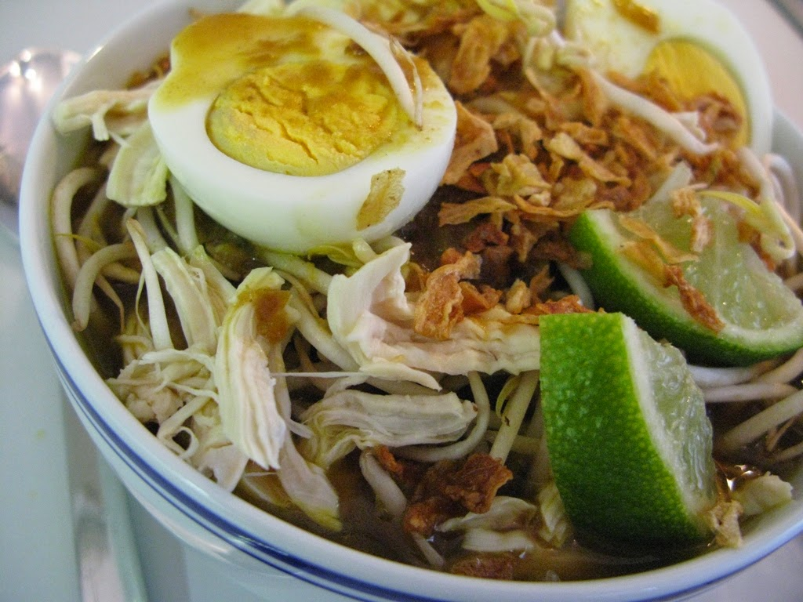

Soto
Diposting pada 14.00 WIB, 09 oktober 2023
soto adalah makanan khas Indonesia seperti sop yang terbuat dari kaldu daging dan sayuran. Daging yang paling sering digunakan adalah daging sapi dan daging ayam, tetapi ada pula yang menggunakan daging babi, daging kuda atau daging kambing.
Selengkapnya